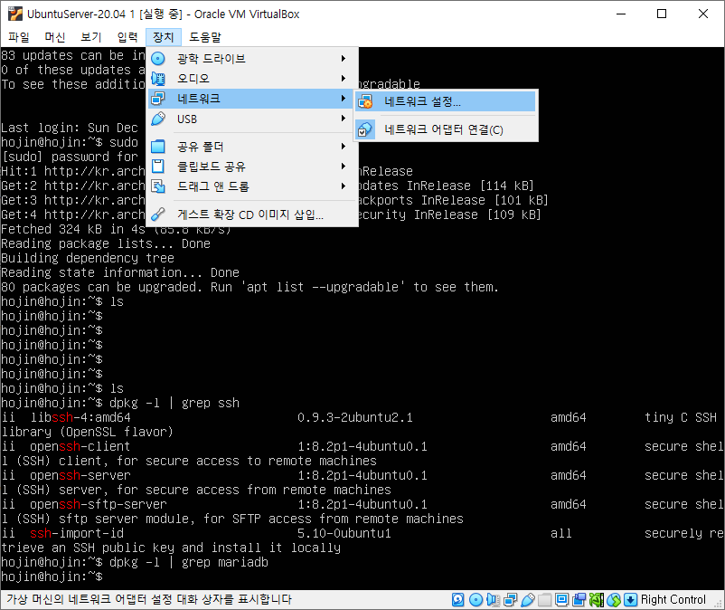
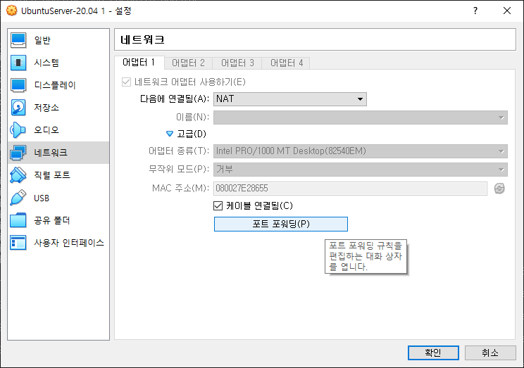
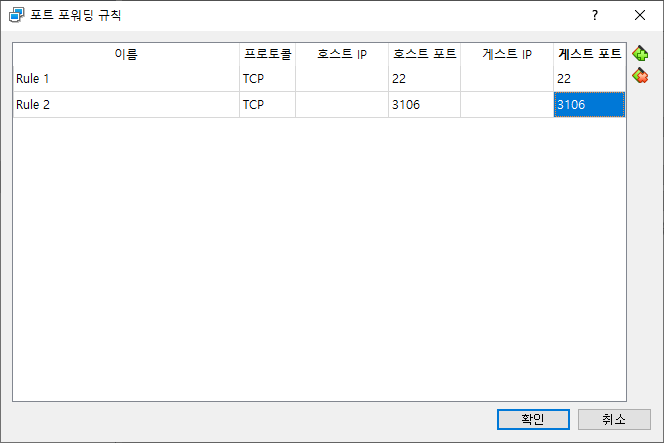

03.환경 설정하기
MariaDB를 사용하기 위한 간단한 설정을 합니다.
root 비밀번호 설정하기
앞에서 우리는 비밀번호를 지정하지 않아도 MariaDB에 접속이 가능하였습니다. Mysql 명령어만 실행하면, 현재 운영체제 사용자와 같은 이름인 root로 비밀번호 없이 접속이 되는 것이다.
비밀번호 없이 데이터베이슬 접속하는 것은 보안측면에서 좋지 않습니다. 보안을 위해서 root 비밀번호를 설정합니다. 다음과 같이 명령을 입력합니다.
기본적으로 패키지만 설치하는 경우 root 암호가 없다. 별도로 지정을 해주어야 한다.
DB를 설치할 때 root 사용자가 하나 추가 된다.
mysqladmin 유틸리티를 통한 비밀번호 변경
$ sudo mysqladmin -u root password ‘패스워드’
원칙적으로 DB에 접속을 하기위해서
Mysql -u 사용자명 -p
형태로 입력을 해야 한다.
접속허용
외부에서 접속하기
DB는 기본적으로 외부로부터 접속을 되지 않도록 설정되어 있다.
/etc/mysql/mariadb.conf.d/50-server.conf 파일을 수정합니다. bind-address 부분을 주석 처리합니다.
$ sudo vi /etc/mysql/mariadb.conf.d/50-server.conf
# Instead of skip-networking the default is now to listen only on
# localhost which is more compatible and is not less secure.
#bind-address = 127.0.0.1
외부 접속을 위한 root 사용자 계정 변경
두번째, DB의 사용자는 권한을 사용자명@호스트/IP주소 형태로 관리 합니다.
기본값은 root@localhost 로 되어 있어 localhost 외의 컴퓨터에서 접속이 불가능 하다.
create user '아이디'@'%' identified by '비밀번호';
grant all privileges on *.* to '아이디'@'%';
기본적으로 MariaDB의 root 계정은 localhost의 터미널 계정에서만 접속이 가능합니다.
만일 다른 외부툴을 이용하여 접속을 하기 위해서는 권환을 추가해 주어야 합니다.
이러한 접속 가능한 컴퓨터를 지정하는 사용자 계정은 동적으로 IP를 할당받는 환경에서는 접속이 어려울수 있다. 매번 컴퓨터를 켤때마다 IP주소가 변경되기 때문이다.
MariaDB [(none)]> create user 'root'@'%' identified by '패스워드';
Query OK, 0 rows affected (0.005 sec)
MariaDB [(none)]> grant all privileges on *.* to 'root'@'%';
Query OK, 0 rows affected (0.012 sec)
MariaDB [(none)]> flush privileges;
Query OK, 0 rows affected (0.001 sec)
127.0.0.1
:::1
Localhost
Server
현재 자신의 컴퓨터를 가리키는 동일한 의미
또는 특정 IP 영역으로 선택할때는 다음과 같이 할 수도 있습니다.
Grant all privileges on *.* to 사용자명@’192.168.1.%’ IDENTIFIED BY ‘1234’;
%는 해당 아이피를 모드 허용하는 xxx값과 같다.
Grant 는 사용자를 생성해 주는 SQL문 이다.
Grant 사용권환 ON 데이터베이스명.테이블 to 사용자명@’호스트’ IDENTIFIED BY ‘비밀번호’;
사용권한을 모두 부여할 경우에는 ALL PRIVILEGES 로 입력하면 됩니다.
모든 스키마와 데이블을 지정할 경우 . 로 입력합니다.
서버를 재시작 합니다.
그리고 서비스를 재시작 합니다. 이제 다른 컴퓨터에서도 DB에 접속이 가능하다.
$ sudo systemctl restart mariadb
방화벽 허용
우분투의 기본적인 방화벽은 UFW입니다.
UWF는 iptables를 좀 더 쉽게 설정할 수 있도록 한 것입니다.
UWF는 간단한 방화벽 구성에는 문제가 없지만 수준 높은 방화벽 구성을 하기 위해서는 iptables 룰을 직접 사용해야 합니다.
# ufw allow 3306
Virtual Box 포트 포워드 허용
VirtualBox, VmWare등의 가상 환경 솔루션을 통하여 외부에서 DB에 접속을 하기 위해서는 포트 설정이 필요로 합니다.
[장치] >[네트워크]>[네트워크 설정] 을 선택합니다.

고급을 선택하여 설정창을 확대합니다. 포트 포워딩을 선택합니다.

3106 포트 포워딩을 추가합니다. MariaDB는 Mysql과 동일하게 3106 포트 번호를 이용합니다.

원격으로 접속하기
다른 서버에 접속을 할 경우에는 mysql -h 서버주소 -u 사용자명 -p 를 입력합니다.
윈도우 컴퓨터에서 VirtualBox로 Mariadb를 접속해 봅니다.
C:\Bitnami\wampstack-8.0.0-0\mysql\bin>mysql -u root -p
Enter password: ******
Welcome to the MySQL monitor. Commands end with ; or \g.
Your MySQL connection id is 14
Server version: 5.5.5-10.3.25-MariaDB-0ubuntu0.20.04.1 Ubuntu 20.04
Copyright (c) 2000, 2020, Oracle and/or its affiliates. All rights reserved.
Oracle is a registered trademark of Oracle Corporation and/or its
affiliates. Other names may be trademarks of their respective
owners.
Type 'help;' or '\h' for help. Type '\c' to clear the current input statement.
mysql>
성공적으로 접속이 되는 것을 확인할 수 있습니다.
Tip. mysql root 비빌번호 분실
root 비밀번호를 분실한 경우 다음과 같이 재설정한다.
mysqld 중지
$ sudo systemctl stop mariadb
안전 모드로 실행을 합니다.
$ sudo /usr/bin/mysqld_safe --skip-grant &
$ sudo mysql -u root
3. 안전모드로 접속해서 root계정 비밀번호 변경
mysql -uroot mysql
MariaDB [mysql]> update user set password=password(‘변경할 비밀번호’) where user=’root’;
MariaDB [mysql]> flush privileges;
MariaDB [mysql]> exit;
4. 접속 확인
mysql -uroot -p
Enter password:
MariaDB [(none)]>
5. 서비스 재시작
systemctl stop mariadb
systemctl start mariadb
출처: https://baejangho.com/entry/MariaDB-비밀번호-분실한-경우-새-비밀번호-생성 [호짱의 개발 블로그]